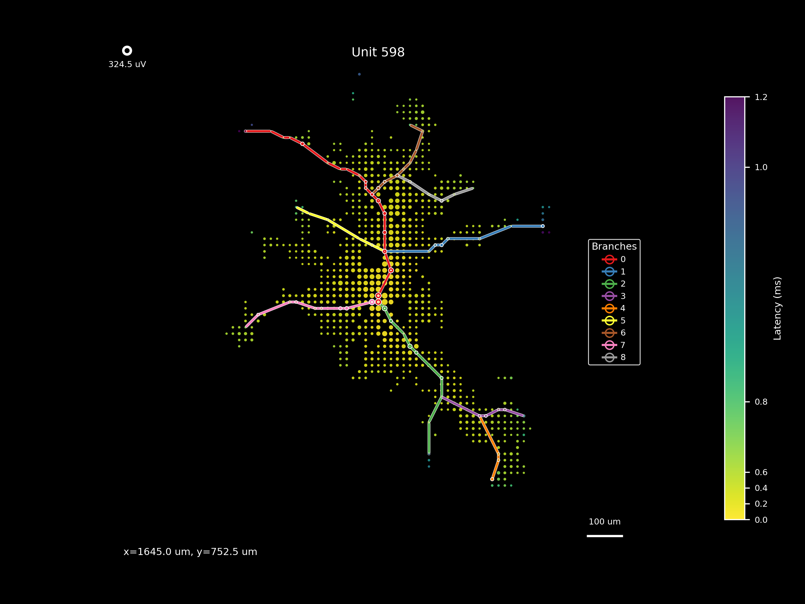
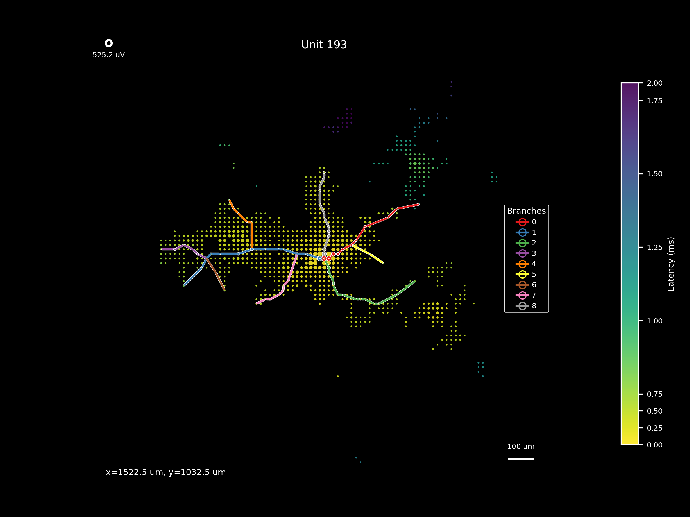
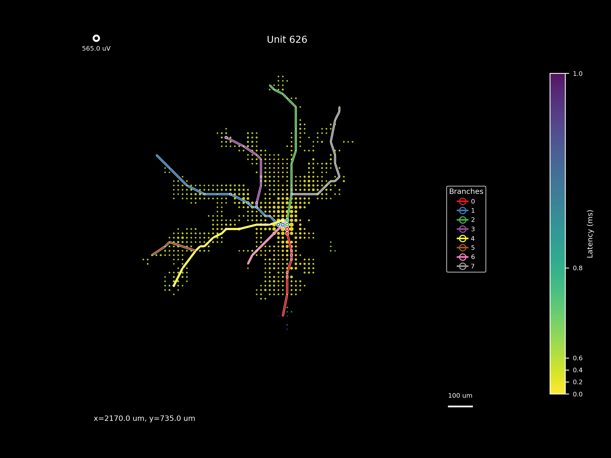
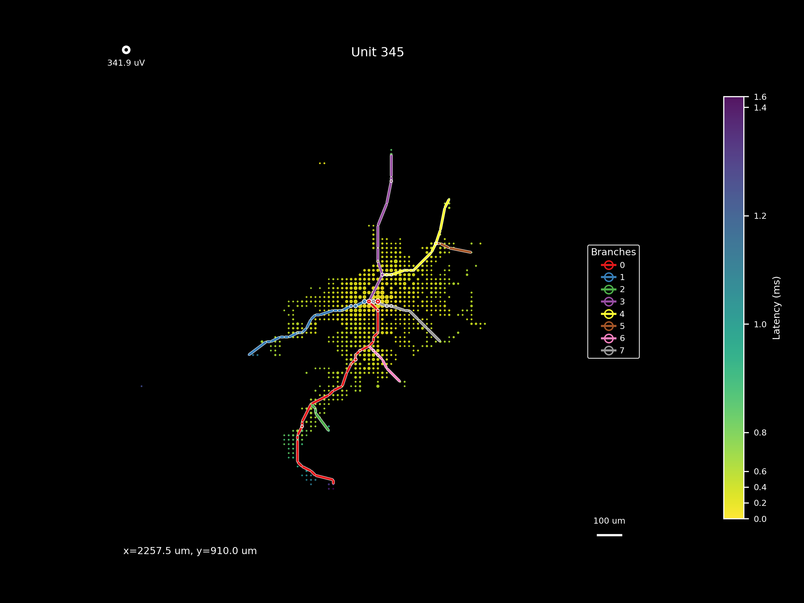
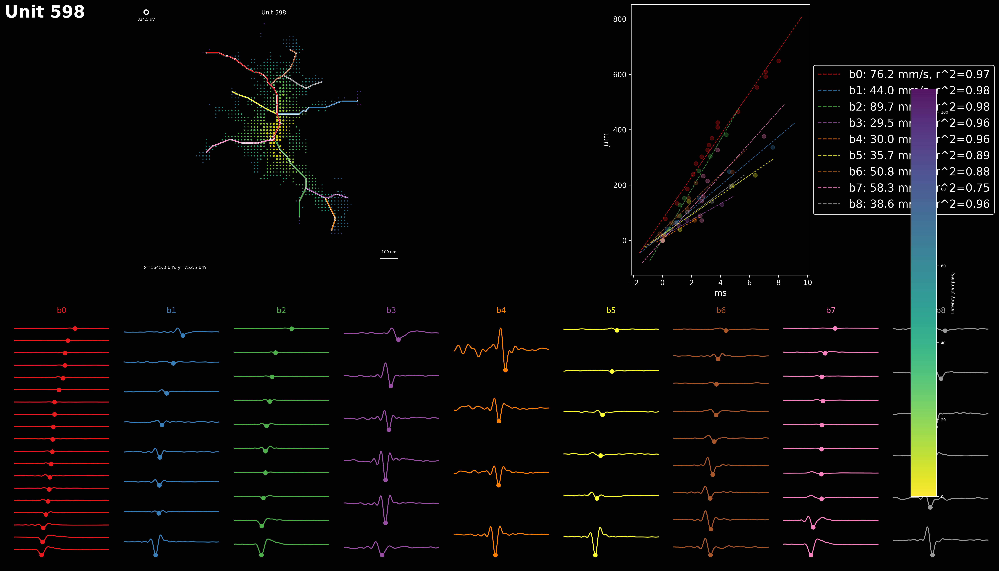

The most-branched reconstructions in the anchor well. Branch counts from branches.json (129/176 templates had ≥1 traced branch; top end is 7–9). These exercise the pathfinding / bifurcation logic and are the natural targets for cross-algorithm comparison.





reports/unit_summary.png. Multi-panel composite emitted by the recon stage: channel selection + amplitude map + per-branch propagation overlay + reconstruction. This is the per-unit "evidence packet" the dashboard surfaces; it's also what makes side-by-side comparison with an alternative algorithm tractable.